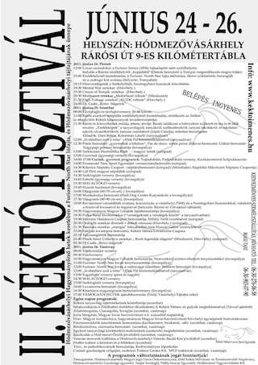

| IdĂľpont | HelyszĂn | PlakĂĄt |
|---|---|---|
| 2011.10.14 | Mindszent Dice klub (Fa kocsma) |
|
| 2008.04.12 | Hmvhely - TulipĂĄn sĂśrĂśzĂś | |
| 2008.04.26 | Hmvhely - CsengĂľdi SĂśrĂśzĂľ | |
| 2008.04.30 | Mindszent - Barbados Pub | |
| 2008.05.02 | Hmvhely - SzĂťcs Kocsma |  |
2008.05.15 | Mako - Sweet Freedom Motoros talĂĄlkozĂł |
 |
| 2008.06.06 | Hmvhely - SzĂťcs Kocsma |  |
| 2008.06.13 | Hmvhely - TulipĂĄn SĂśrĂśzĂľ |  |
| 2008.06.20 | Mindszent - Barbados Pub | |
| 2008.07.04 | Hmvhely - SzĂťcs Kocsma | |
| 2008.08.01 | Hmvhely - SzĂťcs Kocsma | |
| 2008.08.03 | Hmvhely - Tanyabuli JĂłzsinĂĄl | |
| 2008.09.05 | Hmvhely - SzĂťcs Kocsma |  |
| 2008.10.10 | Hmvhely - TulipĂĄn sĂśrĂśzĂľ | |
| 2008.12.13 21:30 |
HĂłdmezĂľvĂĄsĂĄrhely Uv klub |
2008.12.13 24:00 |
OroshĂĄza - KaptĂĄr | 2008.12.25 | Mindszent Rock KarĂĄcsony FellĂŠpĂľk: D.R.Ă.T.K.Ă.T.Ă.L SWAMP HIGH-VOLTAGE FRANK SMUT COLLECTIVE |
2008.12.28 | HĂłdmezĂľvĂĄsĂĄrhely Tiszti FellĂŠpĂľk: HIGH-VOLTAGE HEAVY ??? |
| 2009.01.16 | Szentes - IfjusĂĄgi HĂĄz | |
| 2009.02.28 | Hmvhely - Tiszti Klub | |
| 2009.04.11 | HĂłdemzĂľvĂĄsĂĄrhely - Tiszti klub |
|
| 2009.04.24 | OroshĂĄza - Anno | |
| 2009. 05.15 | SzĂŠkkutas - DrĂłtos Kocsma | |
| 2009. 07.17 | Mindszent | |
| 2009. 08.07 | MedgyesegyhĂĄza - DinnyefesztivĂĄl | |
| 2009. 08.21 | BĂŠkĂŠs - DĂĄnfok ĂdĂźlĂľtelep | |
| 2009.09.25 | OroshĂĄza - Anno |  |
| 2009.09.26 | HĂłdmezĂľvĂĄsĂĄrhely - Club sĂśrĂśzĂľ(Volt MunkĂĄs) | |
| 2009.10.17 | Mindszent - Best SĂśrĂśzĂľ | |
| 2009.10.28 | Szeged - All Music Club | |
| 2009.11.14 | Hmvhely - BĂŠes SĂśrĂśzĂľ | |
| 2009.12.05 | Hmvhely - Club sĂśrĂśzĂľ | |
| 2009.12.25 | Mindszent - KorzĂł SĂśrĂśzĂľ | |
| 2010.01.16 | MakĂł - Motoros ĂŠvnyitĂł buli | |
| 2010 februĂĄr 6 | Szeged - Rebellis Club | |
| 2010 mĂĄrcius 12 | Szentes - IfihĂĄz | |
| 2010 mĂĄrcius 13 | HĂłdmezĂľvĂĄsĂĄrhely - BĂŠes | |
| 2010.05.01 | Hmvhely - BĂŠes SĂśrĂśzĂľ | |
| 2010.06.13. | Mindszent SzegfĂť tanya fesztivĂĄl |
 |
| 2010.06.25. | Hmvhely RĂĄrĂłsi Ăşt 8. km KĂŠk tĂł FesztivĂĄl |
|
| 2010.07.30. | CserkeszĂľlĂľ Motoros Buli Szinyei KastĂŠly TĂłpart 7. |
|
| 2010.09.10-11. | HĂłdmezĂľvĂĄsĂĄrhely HĂłdstock FesztivĂĄl |
|
| 2010.10.1. | MezĂľkovĂĄcshĂĄza | |
| 2010.11.13. | HĂłdmezĂľvĂĄsĂĄrhely DĂŠmon sĂśrĂśzĂľ |
|
| 2010.12.18. | DĂŠmon sĂśrĂśzĂľ |  |
| 2010.12.19. | Szeged DĂłm-tĂŠr |  |
| 2010.12.25. | Mindszent RockkarĂĄcsony | |
| 2011.02.19 | DĂŠmon sĂśrĂśzĂľ | |
| 2011.06.17 | SzegvĂĄr - Ăsz SĂśrĂśzĂľ |  |
| 2011.06.24 | II. KĂŠktĂł FesztivĂĄl - Hmvhely - RĂĄrĂłsi Ăşt 9. kilĂłmĂŠtertĂĄbla |  |
| 2011.08.05 | CserkeszĂľlĂľ - Szinyei KastĂŠly |
{kind=link}
{kind=link}
{kind=link}
{kind=link}
{kind=link}
{kind=link}
{kind=link}
{kind=link}
{kind=link}
{kind=link}
{kind=link}
{kind=link}
{kind=link}
{kind=link}
{kind=link}
{kind=link}
{kind=link}
{kind=link}